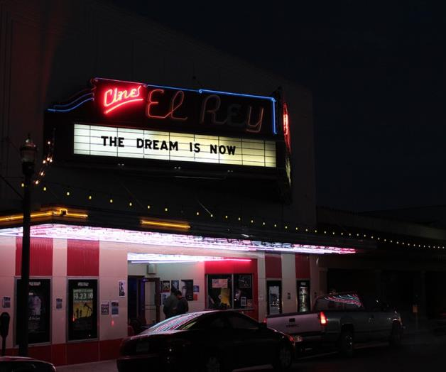

Welcome to our virtual exhibit.

Team members:
Jesus Saenz (e-mail)
Noah Lachica (e-mail)
Jose Parra (e-mail)
Alexis Martinez (e-mail)
Anne Ruiz (e-mail)
CINE EL REY
A Cornerstone of Culture
Cine el Rey is a theatrical venue in downtown McAllen, Texas, on 17th street between Chicago and Dallas avenues. It's rich history, beginning in 1947, has been documented here for visitors to learn of the landmark establishment in south Texas.
Today, under the ownership of pro-preservationist Burt Guerra, The theater is an active host of a diverse number of entertainment media, and hosts the Hispanic theatre company of a local community college. With entertainment forms ranging from cinema to stand-up, musical performance, live wrestling matches, regional events, Cine el Rey's content on offer has played a crucial role in keeping its reputation as a historic landmark of the McAllen metropolitan area.1
HISTORY
The historic Cine el Rey theater has not seen the most exciting of stars and performers, but what it lacks in exposure and profile it makes up for it by holding great significance to the local residents of its hometown and region.
Opened in 1947, the theater quickly grew in popularity, becoming a cornerstone of an emerging Spanish-language film scene that went strong for 40 years.
The second World War marked a significant turning point in America's status on the world stage, and the country emerged with change on the horizon.
America's involvement in the war had caused a decrease in the country's population, and in effect a decrease in labor. The US government was prompted to allow Mexican immigrants into the country through the US-Mexican Bracero program in order to fill the population gaps.
Demand for Spanish-language entertainment skyrocketed due to the influx of Mexican immigrants. Whether born in the US or a native of Mexico, Mexicans had not been given similar privileges to those of Anglo-Americans when it came to theater access. The formation and opening of Cine el Rey on May 1, 1947 saw a philosophy which actively decided against such practices, allowing any person a seat in its wallsLocal Hispanic residents named the local Cine el Rey theater the "Mexican theatre" due to the inclusive space that celebrated Mexican identity through studio-quality entertainment. Many performers from what is considered the Golden Age of Mexican Cinema came to this very theatre in order to make their U.S. debuts, whether on the big screen or through live performances.2
Entertainers such as actor/singer Pedro Infante, film icon Mario “Cantinflas” Moreno, and German "Tin Tan" Valdes, a Mexican actor with over 100 films credits to his name, have graced Cine el Rey with their presence.
"Tin Tan"
A NEW BEGINNING
The decline of the theater’s operations in the 1980s has been observed to have coincided with the decline of the Mexican film industry during the same era, leading to a gradual dip in popularity which led to former owner Eduardo Izaguirre shutting down operation in 1988.3
The establishment was reinvigorated in 2001 by previous owner Luis Munoz and eventually purchased in 2007 by current owner Bert Guerra.3 During this time the Cine el Rey had been listed on the National Registrar of Historic Places. Guerra founded the Historic Cine El Rey Theatre Foundation, a 501c3 nonprofit organization, shortly after the lease to achieve recent goals of renovation and current preservation of the theater, leading to a continuation of operations and an incline in popularity which allowed the theater a chance at a second life, one which continues to this day.3
EL REY TODAY...
Today Cine el Rey is viewed as a cultural phenomenon, one so iconic to the nightlife culture of its parent street as well as to the identity of some members of the Rio Grande Valley.
It continues in its quest in allowing the underprivileged and underrepresented a chance of allowing their messages and ideas being heard and shared, from hosting annual events such as an interactive screening of the 1975 cult classic The Rocky Horry Picture Show and the federally-recognized Martin Luther King Jr. Day in January, to hosting community potlucks every last Tuesday of month, which were organized to coincide with the Tuesday Night Music Club, aimed at giving local residents an alternative social sphere, those in search of connecting with like-minded individuals in the arts and entertainment circuits.2
RIGHT: Burt Guerra commences with a speech to kick off the annual MLK event at Cine el Rey, sharing different stories from his past, such as the stories he shares from his childhood, which he refers to as his "popcorn moments". His speech focuses on why the theatre means so much to him and the community, idolizing it as a symbol of the lower valley. Burt also simplifies what his intentions are with the theatre and what the community can give back to cherish such a historical momument.4
Bert Guerra is the active owner of el rey since 2007 succeeding the previous owners Luis and Ann Munoz who were key to the inclusion of the theatre’s admission into the national registrar of historic places by the U.S department of interior. Guerra hopes to preserve the spirit of the theatre, what makes it a symbol of the valley, the reason behind this heartwarming act is because of past patrons from the cinemas glory days visiting the place in such a long time to see it still standing just the way they had witnessed it back then. Burt also sees the trend of discarding historical buildings as being problematic and vows to treasure El Rey’s past, although he did admit that he had the opportunity to sell the theatre the buyer did not value its legacy or traditions but care for the property itself.4
LIVE MUSIC
This video showcases the local group "Quiet Kids" performing their song "Run Along" to promote their new EP in April 7, 2011. Genre: Indie rock/alternative.5
Cine el Rey has long been a host to various musical artists and acts since its inception. This seniority has given the theater the unique status as the top venue for local and touring artists to perform at. Even today Cine el Rey continues to host major artists from across the globe.
Local band "Sick/Sea" are popular amongst the alternative music crowd. Here they are peforming their track "Talking Doormat" live at Cine el Rey.6
New York indie band "Miniature Tigers" are no strangers to the RGV scene, with their most recent appearance having taken place October 5th, 2018.7
Mainstream New York band "Phantogram" have made high-profile appearances in the RGV. Cine el Rey is a prime spot to catch more well-known musical acts.8
Beyond entertainment purposes, the musical community has organized benefit shows and volunteering opportunities to help the needy and areas affected by natural disaster.9
Other Live Events
Cine el Rey is home to a host of several other forms of entertainment, a variety that caters to all tastes a community may have.
CINE EL REY...
Cine el Rey’s history and significance is one to not be understated, a humble beginning that led to a cultural impact and a transformation of the downtown 17th street into one comparable with that of social hubs the world over, giving a well-needed significance to the Rio Grande Valley region.
Guerra, citing his desire to never sell the theater, has viewed the theater as a celebration of the cultures and superculture found within the Rio Grande Valley region, and as a testament to how entertainment and the arts have been capable of uniting peoples across the community and the planet.2
WORKS CITED
The following resources were used in the making of our exhibit:
- 1Taylor, Amanda A. “Breaking Bread: Cine el Rey.” Valley Morning Star. July 27, 2014. https://www.valleymorningstar.com/news/slice_of_life/breaking-bread-cine-el-rey/article_9622744a-15ec-11e4-b206-001a4bcf6878.html
- 2Gibson, Kelli. “El Evento del Ano: Honoring Mexican-American Heritage in a Historic Theater.” Saving Places. September 15, 2017. https://savingplaces.org/stories/honoring-mexican-american-heritage-in-a-historic-theater#.W9vw9pNKjIU
- 3Lohnes, Kate. “Cine El Rey.” The Brownsville Herald. May 6, 2007. https://www.brownsvilleherald.com/life/cine-el-rey/article_e39699b5-54a5-501b-88b4-26a31326b4f1.html
- 4Bert Guerra MLK speech https://www.youtube.com/watch?v=VKlx5UIyqxY
- 5Quiet Kids live performance of "Run Along" at Cine el Rey. https://www.youtube.com/watch?v=v0Lte8FBVXk
- 6Sick/Sea live performance of "Talking Doormat" at Cine el Rey. https://www.youtube.com/watch?v=srfJniOP-OM
- 7Minature Tigers live performance of "Lolita" at Cine el Rey. https://www.youtube.com/watch?v=srfJniOP-OM
- 8Phantogram live performance of "Howling at the Moon" at Cine el Rey. https://www.youtube.com/watch?v=plozHxc4uK8
- 9bmujica. “Local organizations, musicians create benefit concert to support flood victims.” The Monitor. July 13, 2018. https://www.themonitor.com/2018/07/13/local-organizations-musicians-create-benefit-concert-to-support-flood-victims/
- 10Pro Wrestling Wiki, by Fandom. https://prowrestling.fandom.com/wiki/Cine_El_Rey_Theater